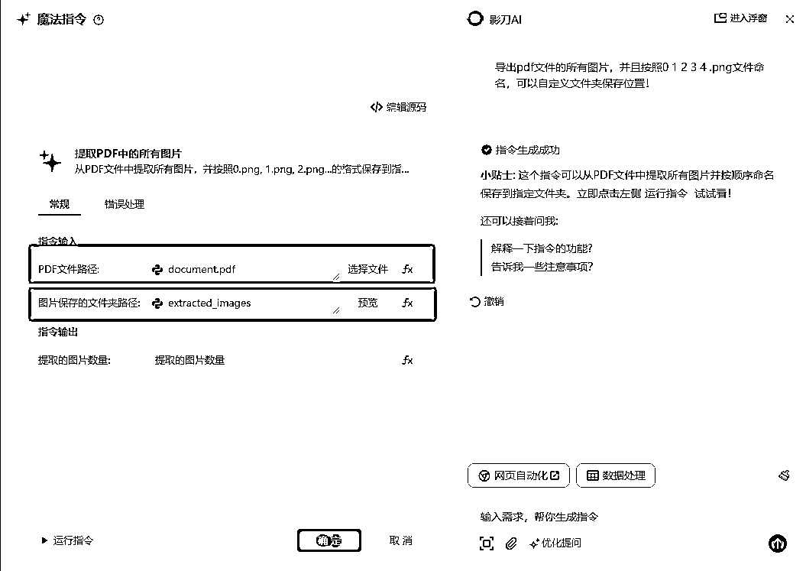
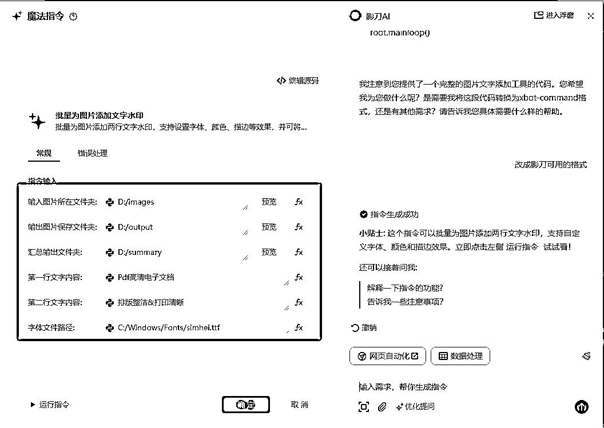
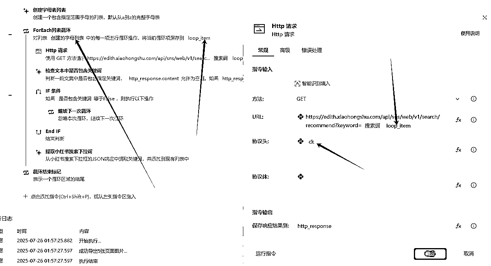

来源：https://riodtlbegu.feishu.cn/docx/BFvkdmz6XoEGPwxY49kcmDD4nvh
大家好,我是锦城
最近也在做小红书虚拟电商
虽然成绩不咋地,但是好在也算是跑通了！
目前也写了很多关于小红书虚拟相关的脚本包括:
1.小红书手机端店铺关键词采集
2.小红书手机端店铺同行商品采集
3.淘宝和小红书商品采集
4.小红书商品上架
5.小红书+比特浏览器多账号上传笔记
6.Pdf或Word生成小红书商品笔记等等！
今天我们主要讲的是第6个！Pdf或Word生成小红书商品笔记！
如果掌握了这个脚本的话,可以在十分钟内生成20篇小红书商品Seo笔记
包括完整的标题、文案、话题、下拉词等！
尽量讲的详细一些,希望对看到文章的小伙伴都有一定的帮助！
注意:
脚本只能提升效率,并不能给你带来金钱
需要自己手动跑通了之后,在考虑提效的事情
不要想着走捷径,赚钱没有那么多捷径给你走
我也是前期老老实实手动做图,笔记,文案,手动上架商品,手动上传笔记！
成功开单了,在考虑提效的事情！！！
也有很多小伙伴跟我反馈说,自己也在B站看了很多影刀的新手教程,但是不知道怎么融入到实战中！
只学了基础知识,遇到想做的脚本不知道影刀是否能完成
或者说不清楚用影刀如何完成自己想做的事情！
今天的文章也会分享整套代码的原理和思路
淘宝采集商品+小红书店铺上架的代码详解可以看这篇文章！
配合今天的脚本,就可以实现百分之80的自动化！！
同时,最近很流行的AI+代码AI+编程 其实影刀里面也有这部分的功能,那就是影刀的魔法指令！
影刀官方魔法指令的介绍:
https://www.yingdao.com/yddoc/rpa/711624635438841856
可以看到,影刀的魔法指令,支持直接粘贴python的代码进来,会自动改写成影刀支持的格式！
今天的代码,其中魔法指令出现的频次会比以往的代码出现的多很多！
主要是有的功能,影刀没有现成的命令,而我也不会python
但是我的可以通过deepseek 豆包AI等大模型
生成对应的python代码,在粘贴给影刀,改成影刀内部可以使用的命令,方便我们调用！
视频中会自动生成两种笔记：
是直接根据Pdf或者Word导出的图片！通过给图片添加文字、添加背景框 拼接图片四宫格 九宫格组合笔记图片！
效果图:
通过模板生成对应的笔记,模板需要自己手动制作！先把模板中做好喜欢的样式,字体,颜色等，会复杂一些,但是效果会比第一种好一些！原创度也更高一些！
效果图:
今天主要讲的是第一种模板,直接把Pdf导出的图片当做封面,增加文字背景组合成笔记！
这种代码会简单一些,新手容易直接复刻学习使用！
演示的视频包括生成的图片目前我这边代码是固定6张图,你们自己写代码的时候可以选择更多或者更少的图片都是可以的！
代码的思路主要还是源于你自己手动操作过,然后想办法用影刀完成对应的动作
如果你手动都没有做过，凭空想的话,一般也不好完成或者做出来的效果跟你想象的不一样
我的每个脚本完成之前,都是手动做过一段时间,知道每个流程的难点在哪里
写代码的时候有优先写难点部分,确定能攻克,在写代码
不然的话 写到最后难点没办法攻克,前面的代码又白写了！！
目前该流程我们手动做笔记的流程是:
1.找Pdf文件
2.导出为图片
3.组合四宫格或者九宫格图片
4.在对应的图片上面写上自定义的文字
5.如何调用大模型写笔记标题、文案、话题等
如果这些全部都能做完,那么我们这一套流程就出来了！
目前对于影刀的难点是:
1.Pdf文件导出为图片
2.组合四宫格或者九宫格图片
3.笔记标题、文案、话题如何自动生成
假设我们第二点搞不定,那么我们通过1-3的组合,依然可以把这套流程写出来
生成四宫格或者九宫格的图片的流程,我们可以通过市场上第三方软件来完成！！
假设我们第三点搞不定,那我们依然可以把1-4个流程写出来
笔记标题、文案、话题我们可以人工或者自己在Deepseek或者豆包这类的AI网页里面生成自己在手动写到本地文件
有的时候不一定都要做完,影刀能帮助你提升一部分的效率就可以了！
比如导出Pdf图片,我们10个文件,每个文件通过Wps导出为图片
那么一个文件通过wps打开,导出,选择文件夹,命名等，按照30秒来算的话,10个文件300秒！实际上可能不止
那么通过影刀写一个文件循环命令+导出的命令,可能只要一分钟就可以搞定,就算也是5分钟来搞定
那么这挂脚本的5分钟,你也可以拿来做别的事情,也算提升了效率！
不要想着所有的东西都让影刀来实现,并不现实,能完成两倍的提升,就非常不错了！
目前该脚本的思路源于:
经常刷小红书,可以看到,最近一个月内很多爆款的小红书笔记,都是直接把资料的第一页当做封面
并且点赞收藏的数据都很不错！形式非常简单,手动制作也没有难度,有的甚至都没有文案,直接标题+话题
就组合成一篇小红书爆款笔记！
所以我们制作这种小红书虚拟商品笔记的思路是:
这种能拿来直接制作笔记的Pdf最重要的就是排版好看,美观清晰！
比如这样的:
这种排版好看又美观的图片,咨询过小伙伴
大部分都是用Word制作的,并且做起来非常麻烦 废时间！
所以我们要用到我们的搜索能力,直接去找好看的Pdf成品文件即可！！
可以通过:
1.淘宝
2.拼多多
3.微信搜一搜
4.闲鱼等
5.微信群
6.学科资料小程序 等等！
今天主要推荐几个我经常用到并且免费的渠道:
微信搜一搜如何找到自己想要的资料
比如你在小红书看到这样的一个笔记:
那么我们就去微信搜一搜里面搜索对应的关键词:
有时候能找到同款，也经常能找到类似的同年级,但是不一样的Pdf文件
类似这样:
有的公众号文章里面会发合集,你点开对应的链接
看到Pdf文件之后,可以通过预览功能,看里面的内容是否符合你的审美
如果没问题的话,就可以下载到本地了！！
这个就非常好理解了,潜伏进多个卖学科资料的同行群！他们会每天更新很多资料
比如这样的:
多加几个这样的群,他们每天都会发各种资料,自己选择一些里面排版好看的就可以制作一篇笔记了！！
当然前提你是做这些类目的,如果你是做别的资料的,比如考公资料,考研资料,也可以这样做！
还有一些领域的资料,其实不用很美观,也可以拿来做笔记内容,反正做的搜索流量,只要关键词布局好一些,封面稍微过的去就可以！
至此,我们资料来源的问题,暂时解决了！！如果你们有更好的渠道,可以多交流！
有一些学科资料的小程序里面每天也会更新很多资料,并且都可以预览,但是这些是收费的
避免引流的嫌疑,就不具体展开了！
有很多种方法都可以实现导出Pdf文件所有图片,比如我们可以用Wps自带的导出为图片的功能！
缺点是,有的功能还需要会员,并且如果我们文件多起来的话,也需要一个一个点击,选择文件夹、导出等,流程还是比较繁琐的！
那么这个时候你刚好最近学了一段时间的影刀Rpa教程,想着是不是可以通过影刀实现这个功能
然后你在影刀的指令框搜索Pdf
好了,恭喜你找到现成的命令了！那我们直接调用即可,使用方法也非常的简单
直接把pdf的路径和保存文件夹的路径写进去,点运行即可！
至此我们的第一个难点已经通过影刀Rpa自带的命令成功解决了！
经过测试,你会发现影刀自带的Pdf命令对有的文件无法导出,或者导出的图片都是乱七八糟的图片
那么这个时候,我们可以考虑使用影刀的魔法指令来实现我们的目的:
直接告诉魔法指令你的需求：
比如: 导出pdf文件的所有图片,并且按照0 1 2 3 4 .png文件命名,可以自定义文件夹保存位置！

然后我们点击优化提问
如果你的提问不清晰的话,优化完了之后的提问代码会好很多
我刚才的提问比较完整了,所有优化完之后,都差不多!直接把优化完的提示词发给魔法指令生成代码！
注意:
每个礼拜魔法指令只能提问150次左右,如果非常简单的命令还是自己手动写,复杂的在交给魔法指令！
这是生成的魔法指令,当然这样生成的第一个版本可能导出的图片会有问题,你可以直接继续向魔法指令发送请求,比如导出的图片不完整,或者导出的图片不是完整的图片等！

影刀自带的命令和调试之后的魔法指令导出Pdf文件图片的对比:
1.影刀自带的命令
2.影刀魔法指令
可以看到,魔法指令比自带的命令强很多,导出了正确的图片！
至此,我们解决了第二个难点！如何把Pdf或者Word文件导出为图片！
对接影刀的AI Power,就是影刀的工作流,在工作流里面提前配置好大模型和提示词之后,通过影刀Rpa直接调用工作流,传入对应的参数,就可以拿到返回的参数！
就这样简单的创建一个工作流方便影刀调用即可！具体内容的质量看你传入的参数和提示词！
影刀内部自带的AI大语言模型的命令也可以直接调用主流AI,需要提前充值额度
把需要提交的提示词和对应的参数比如下拉词等直接提问
会自动返回结果,笔记质量的高低跟提示词有关
闲鱼购买硅基流动的key
一个key的价格在0.5元左右！
购买之后商家会教你怎么使用,并且有发教程给你,这里我就不具体展开了！跟着教程学习使用就行
我目前也是用的这个方法,主要是比较便宜,一个key5毛钱,可以用半个月左右
提前买几个key,代码中可以判断,如果第一个key失效了,自动调用第二个key
失效了,可以用影刀的微信通知功能！再手动删除失效的key即可！！
对了,我没有给提示词,这个大家自己在平台搜索一下能出来很多,我就不提供了,怕大家生成的都差不多！
最后提交的参数里面,要有Pdf的文件名,让AI知道你的资料大概是什么
比如 D:\Desktop\生成笔记的pdf或者word\六年级上册语文句子专项练习.pdf
这个文件,我提交的就是 六年级上册语文句子专项练习.pdf
还有核心关键词,就是原始下拉词+加A+Z字母的下拉词！
一起提交给AI,让他生成对应的Seo笔记！
至此,我们已经解决了小红书虚拟商品笔记的文案,标题,话题,主图,副图
已经是一篇完整的笔记,配合 小红书-比特浏览器上传笔记的脚本,就可以完成半自动化！
通过以上操作,发布的文章里会发现,部分笔记发出去没有流量 或者有的笔记直接判定违规说是非原创或者搬运图片
通过前辈文章的学习,我们可以发现图片去重无非就几种方法
那么如果我们使用人工去优化的话是不是可以这样操作:
1.封面图我们添加大标题和小标题,就是给图片增加新的文字达到去重效果
2.调节每个图片的参数,比如亮度,对比度,饱和度等等
3.给图片增加一个背景,用于增加原创度
4. 把几个图片拼接成一个新的图片,常见就是四宫格和九宫格图片
这些美图秀秀等图片编辑软件都可以完成,但是如果每组笔记的6个图片都按照这样去操作的话
会花费大量的时间,那么我们是不是可以考虑使用影刀Rpa来批量解决这样的问题！
通过之前学习的AI+编程
我手里有几个现成的py脚本,这些都是使用Deepseek写的py代码
那么我们可以直接复制对应的py代码给魔法指令
让他优化成影刀可以用的脚本！！
比如这样:
复制对应的py代码
粘贴给魔法指令发送给他 并且告诉他改成影刀可用的格式 ，等待生成
看效果:

所有功能都完美的迁移到影刀上面了,可以自定义文字,字体，大小，描边，描边宽度等参数！！
通过该方法,我们可以直接让魔法指令生成一个可以拼接图片为四宫格或者九宫格的脚本
直接把需要微调的参数发给魔法指令 让它自动生成代码
直接把需要合成的命令发给魔法指令 让它自动生成代码
通过以上的思路,基本可以做到原创,并且每个笔记都可以投薯条了！
文案中记得让AI不要引导用户点赞收藏私信关注等,不然笔记也会提示违规。
至此,我们已经把大部分的难点都解决了！根据我们以上的思路
就可以开始写影刀代码！
影刀Rpa对新手还是非常友好的,跟搭积木一样,只要把对应的命令拖拽就可以实现我们想要的功能！
我们在来捋一捋我们现在的代码思路:
1.导出Pdf文件的图片
2.在对应的图片上面写上自定义标题
3.组合四宫格或者九宫格图片
4.最后选择需要添加背景框的图片 添加对应的背景即可
这个时候我们就需要考虑我们的笔记模板
我最开始是思路是:
就是首图当做封面+文字
两个四宫格
两个九宫格
最后加一个单张图
也能出单,但是不多,最后请教了朋友,朋友说第2 3 4 5 图片 用户看不清楚你资料的内容
自然不知道是不是自己想要的,会降低转化率
所以后面改成了:
首图封面+文字
三个单图
1个四宫格图片+文字
1个九宫格图片+文字
那我们就拿111149模板举例
当然,如果你要做8图或者10图也是可以的，我们今天就按照6图来举例
因为很多Pdf文件里面并没有很多图片,基本都是10+个页面 也就是10+个图片！
如果做8-10图的话,随机抽取的话 可能会抽取到重复的图片！
我们需要把Pdf的文件名获取到,按照文件名创建主文件夹
比如pdf路径:
D:\Desktop\生成图片的pdf\2025国考申论范文100篇.pdf
创建的文件夹名称为: 2025国考申论范文100篇
在主文件夹内创建四个文件夹 分别为:
2025国考申论范文100篇\单图
2025国考申论范文100篇\四宫格
2025国考申论范文100篇\九宫格
2025国考申论范文100篇\成品笔记
其中我做了一个判断,如果Pdf的页码小于4直接就放弃这个文件
如果Pdf页码数量 大于4小于9 那么我们就不创建九宫格文件夹 因为他的图片数量不够拼接九宫格图片
生成完了对应的文件夹 我们直接把调用 生成四宫格或者九宫格的魔法指令
把单图文件夹内的图片组合拼接成 四宫格或者九宫格图片
并且放到对应的文件夹内:
到这里,我们就把我们所有需要的图片都准备好了！
我们就可以自由选择对应的图片！进行添加背景框,添加文字等操作！
我的思路是:
封面图选择单图文件夹内的第一个图片,就是Pdf文件的第一个页面图片
一般第一个页面都有一个大标题,加上我们人工添加的两行文字,就可以当做一个封面图片
直接生成在成品笔记的文件夹目录里面，命名为0.png
我们上传笔记的时候也是按照数字从小到大排序的文件依次上传的！所以我们命名为0.png！
第2 3 4 张图片思路都是一样的 ，随机抽取单图文件夹内的一个图片做为副图，并且命名成 1 2 3.png
但是,由于有一些Pdf页码比较少,生成出来的图片比较少,我们随机抽取的时候经常会抽取到同一张图片
所以我们需要做一个动作:
如果Pdf页面数量多的话
我们每次抽取完一张单图之后,需要把对应单图目录中的对应图片
移动到另外一个临时文件夹内,等待所有图片都抽取完毕之后,在移动回去
代码思路如下:
如果Pdf页面数量不多的话
我们直接把页面第2 3 4张拷贝到成品文件夹内
代码如下:
第五张图片我选择的是四宫格图片
我们直接随机抽取一张四宫格图片,如果需要添加背景的话,就添加上背景，然后移动到成品文件夹内就可以
第六张图片是九宫格,思路如上！
最后给:
第五张 四宫格图片
第六张 就公告图片 加上对应的文字即可！
至此,所有的图片都已经归类到成品文件夹内,图片部分完成！
打开小红书网页版 登录账号,按F12 右上方选择NetWork中文是网络
然后点击搜索
右边找到对应的Cookies
写到第一行的变量中去即可:
这段便是我们的请求地址,我们把word=后面的删除了,换成我们搜索的核心关键词！
这样网页就会返回对应的下拉词,我们再交给魔法指令去处理提取出来对应的每个下拉词！
这样就获取到一个原始关键词的下拉词
然后我们创建一个列表,列表的成员分别是 a-z字母
依次循环这个字母，添加到搜索词的后面
这样我们就可以获取到核心关键词a-z的所有下拉词,并且汇总到一个列表中！

这样我们就可以得到一组下拉词！包括 核心关键词原始下拉词 和 a-z字母的所有下拉词！
我们可以一起提交给AI 让他生成对应的Seo标题 文案 话题等！！
文案部分可以跳转影刀代码思路第三部分
其中有说如何使用影刀对接大语言模型,生成对应的文案标题话题等！
3.自己或者Ai生成对应的完整笔记标题、文案、话题
如果我们拿到了很多分pdf资料，并不需要每个资料都上架到小红书店铺
我们只需要上架类似这样的一个商品即可！
用户下单之后,让他发笔记的截图给你,你在把对应的网盘链接发给他即可！
# pip install pillow
from PIL import Image, ImageDraw, ImageFont
import os
from typing import *
try:
from xbot.app.logging import trace as print
except:
from xbot import print
def add_text_to_image(image_path, text1, text2, font_path=None, font_size=110,
text_color="#f7c643", stroke_color="#000000", stroke_width=9,
background_color=None, text_spacing=None,
text_bg_color="#000000", text_bg_opacity=128,
text_bg_padding=20, use_auto_size_bg=True):
"""
title: 为单张图片添加带背景的文字水印
description: 为指定图片添加两行文字水印，每行文字可带有矩形背景，可自定义文字内容、字体、颜色、背景等样式，处理后直接覆盖原图片。
inputs:
- image_path (file): 需要处理的图片文件路径，eg: "D:/图片素材/示例图片.jpg"
- text1 (str): 第一行文字内容，eg: "Pdf高清电子文档"
- text2 (str): 第二行文字内容，eg: "排版整洁&打印清晰"
- font_path (str): 字体文件路径，留空使用系统默认字体，eg: "C:/Windows/Fonts/simhei.ttf"
- font_size (int): 字体大小，eg: 110
- text_color (str): 文字颜色(十六进制)，eg: "#f7c643"
- stroke_color (str): 描边颜色(十六进制)，eg: "#000000"
- stroke_width (int): 描边宽度，eg: 9
- background_color (str): 整个图片的背景颜色(十六进制)，留空表示不修改背景，eg: "#ffffff"
- text_spacing (int): 文字间距(像素)，决定两行文字与中线的距离，留空使用默认值，eg: 100
- text_bg_color (str): 文字背景矩形的颜色(十六进制)，eg: "#000000"
- text_bg_opacity (int): 文字背景矩形的透明度(0-255)，0为完全透明，255为不透明，eg: 128
- text_bg_padding (int): 文字背景矩形的内边距(像素)，eg: 20
- use_auto_size_bg (bool): 是否让背景矩形尺寸自动跟随文字，True为自动，False为固定宽度使用图片宽度，eg: True
outputs:
- success (bool): 处理结果，True表示成功，False表示失败，eg: True
"""
# 参数验证
if not os.path.isfile(image_path):
raise ValueError(f"图片文件不存在: {image_path}")
# 将颜色从十六进制转换为RGB元组
def _hex_to_rgb(hex_color):
if not hex_color:
return None
hex_color = hex_color.lstrip('#')
return tuple(int(hex_color[i:i+2], 16) for i in (0, 2, 4))
text_color_rgb = _hex_to_rgb(text_color)
stroke_color_rgb = _hex_to_rgb(stroke_color)
background_color_rgb = _hex_to_rgb(background_color)
text_bg_color_rgb = _hex_to_rgb(text_bg_color)
# 添加透明度到文字背景颜色
text_bg_color_rgba = text_bg_color_rgb + (text_bg_opacity,)
# 寻找可用的字体
def _find_font():
if font_path and os.path.exists(font_path):
return font_path
# 尝试常见字体路径
default_fonts = [
r'C:\Windows\Fonts\simhei.ttf', # 黑体
r'C:\Windows\Fonts\simsun.ttc', # 宋体
r'C:\USERS\ADMINISTRATOR\APPDATA\LOCAL\MICROSOFT\WINDOWS\FONTS\汉仪润圆-55.TTF'
]
for path in default_fonts:
if os.path.exists(path):
return path
return None # 使用默认字体
font_file = _find_font()
try:
# 打开图片
image = Image.open(image_path)
# 如果指定了背景颜色，创建新的背景并粘贴原图
if background_color_rgb:
new_image = Image.new('RGB', image.size, background_color_rgb)
new_image.paste(image, (0, 0))
image = new_image
# 确保图片有Alpha通道，以便添加半透明背景
if image.mode != 'RGBA':
image = image.convert('RGBA')
width, height = image.size
# 创建一个透明层用于绘制文字和背景
overlay = Image.new('RGBA', image.size, (0, 0, 0, 0))
draw = ImageDraw.Draw(overlay)
# 尝试加载字体文件
try:
font = ImageFont.truetype(font_file, font_size) if font_file else ImageFont.load_default()
except Exception as e:
print(f"加载字体失败: {e}")
font = ImageFont.load_default()
# 兼容不同版本的PIL库，处理textbbox方法不存在的情况
def _get_text_size(text, font):
try:
# 尝试使用textbbox方法（PIL 8.0.0及以上版本）
bbox = draw.textbbox((0, 0), text, font=font)
return bbox[2] - bbox[0], bbox[3] - bbox[1]
except AttributeError:
# 回退到使用textsize方法（旧版本PIL）
try:
return draw.textsize(text, font=font)
except AttributeError:
# 如果textsize也不存在，使用getsize方法（更旧的版本）
return font.getsize(text)
# 计算文字尺寸
text1_width, text1_height = _get_text_size(text1, font)
text2_width, text2_height = _get_text_size(text2, font)
# 计算中心线
center_y = height // 2
# 默认间距是图片高度的1/6，可由用户自定义
default_spacing = height // 6
spacing = text_spacing if text_spacing is not None else default_spacing
# 计算文字位置，使两行文字距离中线相等
y1 = center_y - spacing - text1_height // 3
y2 = center_y + spacing - text2_height // 2
# 第一行文字居中
x1 = (width - text1_width) // 2
# 绘制第一行文字的背景矩形
if use_auto_size_bg:
# 自动尺寸背景，根据文字大小加上内边距
bg1_left = x1 - text_bg_padding
bg1_top = y1 - text_bg_padding
bg1_right = x1 + text1_width + text_bg_padding
bg1_bottom = y1 + text1_height + text_bg_padding
else:
# 固定宽度背景，使用图片宽度
bg1_left = 0
bg1_top = y1 - text_bg_padding
bg1_right = width
bg1_bottom = y1 + text1_height + text_bg_padding
draw.rectangle([bg1_left, bg1_top, bg1_right, bg1_bottom], fill=text_bg_color_rgba)
# 第二行文字居中
x2 = (width - text2_width) // 2
# 绘制第二行文字的背景矩形
if use_auto_size_bg:
# 自动尺寸背景，根据文字大小加上内边距
bg2_left = x2 - text_bg_padding
bg2_top = y2 - text_bg_padding
bg2_right = x2 + text2_width + text_bg_padding
bg2_bottom = y2 + text2_height + text_bg_padding
else:
# 固定宽度背景，使用图片宽度
bg2_left = 0
bg2_top = y2 - text_bg_padding
bg2_right = width
bg2_bottom = y2 + text2_height + text_bg_padding
draw.rectangle([bg2_left, bg2_top, bg2_right, bg2_bottom], fill=text_bg_color_rgba)
# 在透明层上绘制文字
draw.text((x1, y1), text1, fill=text_color_rgb, font=font,
stroke_width=stroke_width, stroke_fill=stroke_color_rgb)
draw.text((x2, y2), text2, fill=text_color_rgb, font=font,
stroke_width=stroke_width, stroke_fill=stroke_color_rgb)
# 将透明层合并到原图
result = Image.alpha_composite(image, overlay)
# 如果原图没有Alpha通道，转回RGB模式
if image.mode != 'RGBA':
result = result.convert('RGB')
# 保存处理后的图片（覆盖原图）
result.save(image_path, quality=95)
print(f"成功处理图片: {image_path}")
return True
except Exception as e:
print(f"处理图片时出错: {e}")
return False
# 使用此指令前，请确保安装必要的Python库，例如使用以下命令安装：
# pip install Pillow
import os
import re
import gc
import traceback
from PIL import Image, ImageDraw
from typing import *
try:
from xbot.app.logging import trace as print
except:
from xbot import print
def create_image_grid(input_folder, output_folder, grid_type=4, num_grids=None):
"""
title: 图片拼图工具
description: 将图片文件夹中的所有图片按指定行列数拼接成网格，自动在图片间添加灰色间隙。可指定生成的拼图数量，每个拼图左上角始终是序号最小的图片。
inputs:
- input_folder (folder): 包含图片的输入文件夹路径，eg: "D:/images"
- output_folder (folder): 拼图结果的保存路径，eg: "D:/output"
- grid_type (int): 拼图类型，4表示四宫格(2x2)，9表示九宫格(3x3)，eg: 4
- num_grids (int): 要生成的拼图数量(可选)，不指定或为0时会根据图片数量自动计算，eg: 3
outputs:
- output_paths (list): 生成的拼图图片路径列表，eg: ["D:/output/四宫格_0.png"]
"""
# 禁用PIL的像素限制
Image.MAX_IMAGE_PIXELS = None
# 定义背景图片的尺寸
BACKGROUND_WIDTH = 1242
BACKGROUND_HEIGHT = 1656
# 定义图片之间的空隙大小
GAP = 10
# 定义淡灰色，用于空隙颜色
GRAY_COLOR = (220, 220, 220)
# 图片最大尺寸，用于降低内存使用
MAX_IMAGE_SIZE = (800, 800)
# 打印所有输入参数，帮助调试
print(f"输入参数: input_folder={input_folder}, output_folder={output_folder}, grid_type={grid_type}, num_grids={num_grids}")
try:
# 标准化路径，确保路径格式正确
input_folder = os.path.normpath(input_folder)
output_folder = os.path.normpath(output_folder)
# 检查输入有效性
if not os.path.isdir(input_folder):
print(f"输入文件夹不存在: {input_folder}")
raise ValueError(f"输入文件夹不存在: {input_folder}")
# 确保num_grids是整数
if num_grids is not None:
try:
num_grids = int(num_grids)
print(f"用户指定的拼图数量: {num_grids}")
if num_grids <= 0:
num_grids = None
print("拼图数量小于或等于0，将使用自动计算的数量")
except (TypeError, ValueError):
print(f"无效的拼图数量: {num_grids}，将使用自动计算的数量")
num_grids = None
# 确保输出文件夹存在
os.makedirs(output_folder, exist_ok=True)
# 确定网格行列数
if int(grid_type) == 4:
rows, cols = 2, 2
grid_name = "四宫格"
cells_per_grid = 4
else: # grid_type == 9
rows, cols = 3, 3
grid_name = "九宫格"
cells_per_grid = 9
print(f"开始处理: 输入文件夹 {input_folder}, 输出文件夹 {output_folder}, 网格类型 {grid_name}")
def _create_background():
"""创建一个指定尺寸的白色背景图片"""
return Image.new('RGB', (BACKGROUND_WIDTH, BACKGROUND_HEIGHT), color='white')
def _resize_image(img, target_width, target_height):
"""调整图片大小以适应目标尺寸，同时保持图片的高清晰度"""
# 计算调整大小后的尺寸，保持原始宽高比
width, height = img.size
ratio = min(target_width / width, target_height / height)
new_width = int(width * ratio)
new_height = int(height * ratio)
# 使用 LANCZOS 提高清晰度
try:
return img.resize((new_width, new_height), Image.LANCZOS)
except AttributeError:
# 对于较新版本的Pillow
return img.resize((new_width, new_height), Image.Resampling.LANCZOS)
def _load_image_with_reduced_size(image_path):
"""以较低分辨率加载图片，减少内存使用"""
try:
# 打开图片但不立即加载
img = Image.open(image_path)
# 如果图片大于最大尺寸，先缩小它
if img.width > MAX_IMAGE_SIZE[0] or img.height > MAX_IMAGE_SIZE[1]:
img.thumbnail(MAX_IMAGE_SIZE, Image.LANCZOS)
# 将图片转换为RGB模式，减少内存使用
if img.mode != 'RGB':
img = img.convert('RGB')
print(f"成功加载图片: {os.path.basename(image_path)}, 尺寸: {img.size}")
return img
except Exception as e:
print(f"加载图片 {image_path} 时出错: {e}")
# 创建一个小的替代图片
return Image.new('RGB', (100, 100), color=(200, 200, 200))
def _arrange_images(image_paths, rows, cols, first_image_path):
"""将图片按照指定的行列数排列在背景图片上，一次只加载一张图片以节省内存"""
# 创建白色背景图片
background = _create_background()
draw = ImageDraw.Draw(background)
# 计算每个单元格的宽度和高度
cell_width = (BACKGROUND_WIDTH - (cols + 1) * GAP) // cols
cell_height = (BACKGROUND_HEIGHT - (rows + 1) * GAP) // rows
# 绘制水平间隙线
for i in range(1, rows):
y_pos = i * (cell_height + GAP)
draw.rectangle((0, y_pos, BACKGROUND_WIDTH, y_pos + GAP), fill=GRAY_COLOR)
# 绘制垂直间隙线
for j in range(1, cols):
x_pos = j * (cell_width + GAP)
draw.rectangle((x_pos, 0, x_pos + GAP, BACKGROUND_HEIGHT), fill=GRAY_COLOR)
# 计算每个图片的位置
positions = []
for i in range(rows):
for j in range(cols):
x = GAP + j * (cell_width + GAP)
y = GAP + i * (cell_height + GAP)
positions.append((x, y))
# 加载并放置第一张图片（序号最小的图片）
first_img = _load_image_with_reduced_size(first_image_path)
resized_first_img = _resize_image(first_img, cell_width, cell_height)
x, y = positions[0]
x_offset = (cell_width - resized_first_img.width) // 2
y_offset = (cell_height - resized_first_img.height) // 2
background.paste(resized_first_img, (x + x_offset, y + y_offset))
# 释放第一张图片的内存
del first_img
del resized_first_img
gc.collect()
# 粘贴其余图片到对应位置
for i in range(1, len(positions)): # 从位置1开始，位置0已经放了序号最小的图片
if i-1 < len(image_paths): # 注意索引调整，因为image_paths不包括第一张图片
# 加载图片
img = _load_image_with_reduced_size(image_paths[i-1])
# 调整图片大小
resized_img = _resize_image(img, cell_width, cell_height)
# 获取图片要放置的位置
x, y = positions[i]
# 计算图片在目标区域内居中的偏移量
x_offset = (cell_width - resized_img.width) // 2
y_offset = (cell_height - resized_img.height) // 2
# 将图片粘贴到背景图上的指定位置
background.paste(resized_img, (x + x_offset, y + y_offset))
# 释放图片对象，减少内存使用
del img
del resized_img
gc.collect()
return background
def _natural_sort_key(s):
"""使用自然排序算法对文件名进行排序，识别文件名中的数字部分"""
return [int(text) if text.isdigit() else text.lower()
for text in re.split(r'(\d+)', os.path.basename(s))]
# 主处理函数
output_paths = []
# 获取输入文件夹中的所有图片文件
image_extensions = ['.jpg', '.jpeg', '.png', '.bmp', '.gif', '.tiff', '.webp']
image_files = []
try:
# 列出目录内容，捕获可能的编码错误
dir_content = os.listdir(input_folder)
print(f"成功列出目录内容，共 {len(dir_content)} 个文件或文件夹")
for file in dir_content:
file_path = os.path.join(input_folder, file)
if os.path.isfile(file_path):
ext = os.path.splitext(file)[1].lower()
if ext in image_extensions:
image_files.append(file_path)
print(f"在输入文件夹中找到 {len(image_files)} 个图片文件")
except Exception as e:
print(f"列出目录内容时出错: {e}")
print(traceback.format_exc())
if not image_files:
print(f"在 {input_folder} 中没有找到图片文件，退出处理")
return []
# 使用自然排序算法对图片文件进行排序（比如0.png, 1.png, 2.png，...，10.png）
image_files.sort(key=_natural_sort_key)
print(f"按自然顺序排序后的第一个文件: {os.path.basename(image_files[0])}")
# 记录最小序号图片的路径
first_image_path = image_files[0]
print(f"序号最小的图片是: {os.path.basename(first_image_path)}")
# 确定要生成的网格数量
if num_grids is None:
# 自动计算可以生成的完整网格数量
calculated_num_grids = max(3, (len(image_files) + cells_per_grid - 1) // cells_per_grid)
num_grids = calculated_num_grids
print(f"自动计算的拼图数量: {num_grids}")
print(f"将生成 {num_grids} 个{grid_name}")
# 处理每一个网格
for grid_index in range(int(num_grids)): # 确保num_grids是整数
try:
print(f"开始处理第 {grid_index+1}/{num_grids} 个网格")
# 为当前网格选择图片路径，第一个位置总是序号最小的图片
grid_image_paths = []
# 计算需要多少张图片来填充剩余的格子
remaining_cells = cells_per_grid - 1
# 如果有足够的图片，不需要重复
if len(image_files) - 1 >= remaining_cells:
# 从第二张图片开始选择，避免重复使用第一张
start_idx = 1 + (grid_index * remaining_cells) % (len(image_files) - 1)
for i in range(remaining_cells):
img_idx = (start_idx + i) % len(image_files)
if img_idx == 0: # 跳过序号最小的图片
img_idx = 1
grid_image_paths.append(image_files[img_idx])
else:
# 需要重复使用图片
# 首先添加所有剩余的图片（除了第一张）
for i in range(1, len(image_files)):
grid_image_paths.append(image_files[i])
# 如果还不够，循环添加图片直到填满
remaining_needed = remaining_cells - len(grid_image_paths)
if remaining_needed > 0:
print(f"需要额外重复 {remaining_needed} 张图片")
repeat_idx = 0
while len(grid_image_paths) < remaining_cells:
idx_to_use = 1 + (repeat_idx % (len(image_files) - 1))
grid_image_paths.append(image_files[idx_to_use])
repeat_idx += 1
# 确保只使用需要的图片数量
grid_image_paths = grid_image_paths[:remaining_cells]
print(f"处理第 {grid_index+1} 个网格，共 {cells_per_grid} 个位置，第1个位置为序号最小的图片，其余 {len(grid_image_paths)} 个位置为其他图片")
# 进行图片排列和拼图
combined_image = _arrange_images(grid_image_paths, rows, cols, first_image_path)
# 构建输出文件的文件名
output_filename = f"{grid_name}_{grid_index}.png"
output_path = os.path.join(output_folder, output_filename)
# 保存拼图结果
print(f"保存拼图到: {output_path}")
combined_image.save(output_path)
output_paths.append(output_path)
print(f"已成功保存拼图图片到 {output_path}")
# 释放资源
del combined_image
gc.collect()
except Exception as e:
print(f"处理网格 {grid_index} 时出错: {e}")
print(traceback.format_exc())
if not output_paths:
print("没有生成任何拼图图片，请检查输入文件夹中的图片是否有效。")
else:
print(f"总共生成了 {len(output_paths)} 张拼图图片。")
return output_paths
except Exception as e:
print(f"发生错误: {e}")
print(traceback.format_exc())
return []
# 使用此指令前，请确保安装必要的Python库，例如使用以下命令安装：
# pip install PyMuPDF Pillow numpy
import fitz # PyMuPDF
import io
import os
import numpy as np
from PIL import Image
import traceback
from typing import *
try:
from xbot.app.logging import trace as print
except:
from xbot import print
def extract_pages_as_images(pdf_file, output_folder, filter_blank_pages=True):
"""
title: 从PDF导出整页为PNG图片
description: 将PDF文件的每一页作为单独的PNG图片导出，可选是否过滤空白页面。
inputs:
- pdf_file (file): PDF文件路径，eg: "example.pdf"
- output_folder (folder): 图片保存的文件夹路径，eg: "output_images"
- filter_blank_pages (bool): 是否过滤空白占比大的页面，eg: True
outputs:
- result (str): 执行结果信息，包括导出的图片数量和可能的错误信息，eg: "成功导出5张页面图片"
"""
# 检查输入文件和输出文件夹
if not os.path.exists(pdf_file):
raise FileNotFoundError(f"找不到PDF文件: {pdf_file}")
# 创建输出文件夹（如果不存在）
os.makedirs(output_folder, exist_ok=True)
# 图片质量检查函数
def _is_blank_image(img, threshold=0.90):
"""检查图片是否为空白占比大的图片，调低阈值使检测不那么严格"""
if img.mode == 'RGBA':
# 转换为RGB模式
img = img.convert('RGB')
# 将图片转换为灰度图像
if img.mode != 'L':
img = img.convert('L')
# 将图片转换为NumPy数组
img_array = np.array(img)
# 检查图片是否大部分为白色或透明
white_ratio = np.mean(img_array > 240)
if white_ratio > threshold:
return True, white_ratio
# 检查图片是否大部分为黑色
black_ratio = np.mean(img_array < 15)
if black_ratio > threshold:
return True, black_ratio
return False, max(white_ratio, black_ratio)
try:
# 打开PDF文件
pdf_document = fitz.open(pdf_file)
# 检查PDF权限
if pdf_document.is_encrypted:
try:
# 尝试不带密码打开
if not pdf_document.authenticate(""):
return "PDF文件被加密，无法导出页面"
except:
return "PDF文件被加密，无法导出页面"
image_count = 0
blank_count = 0
issues = []
successful_extractions = []
# 遍历PDF的每一页并导出为图片
for page_num in range(len(pdf_document)):
try:
# 获取当前页
page = pdf_document[page_num]
# 使用高分辨率渲染页面
pix = page.get_pixmap(matrix=fitz.Matrix(300/72, 300/72))
# 将pixmap转换为PIL图像以检查是否为空白
img_bytes = pix.tobytes("png")
img = Image.open(io.BytesIO(img_bytes))
# 检查页面是否为空白
is_blank, blank_ratio = _is_blank_image(img)
# 如果是空白页面且用户选择过滤，则跳过
if filter_blank_pages and is_blank:
blank_count += 1
continue
# 保存为PNG图片
image_filename = f"{image_count}.png"
image_path = os.path.join(output_folder, image_filename)
pix.save(image_path)
# 添加成功导出记录
blank_info = f" (空白占比: {blank_ratio:.2%})" if blank_ratio > 0.5 else ""
successful_extractions.append(f"第{page_num+1}页 -> {image_count}.png{blank_info}")
image_count += 1
except Exception as e:
issues.append(f"处理第{page_num+1}页时出错: {str(e)}")
# 关闭PDF文件
pdf_document.close()
# 准备返回结果
if image_count > 0:
filter_state = "已过滤" if filter_blank_pages else "检测到但未过滤"
result = f"成功导出{image_count}张页面图片"
if blank_count > 0:
result += f"，{filter_state}{blank_count}张空白占比大的页面"
if issues:
result += f"\n\n可能的问题({len(issues)}个):\n" + "\n".join(issues)
result += f"\n\n成功导出的页面列表:\n" + "\n".join(successful_extractions)
else:
if blank_count > 0:
result = f"未导出任何页面，但检测到{blank_count}张空白占比大的页面，可能原因:\n"
result += "1. 所有页面空白占比都超过阈值\n"
result += "2. 如需查看这些空白页面，请将'过滤空白页面'选项设为False"
else:
result = "无法从PDF导出任何页面图片，可能的原因：\n"
result += "1. PDF可能是空文件\n"
result += "2. PDF可能有特殊保护措施"
if issues:
result += f"\n\n详细问题({len(issues)}个):\n" + "\n".join(issues)
return result
except Exception as e:
error_trace = traceback.format_exc()
return f"处理PDF时发生错误:\n{str(e)}\n\n详细错误信息:\n{error_trace}"
# pip install Pillow
import os
import random
import shutil
from PIL import Image, ImageStat
import numpy as np
from typing import *
try:
from xbot.app.logging import trace as print
except:
from xbot import print
def random_select_images(source_folder, target_folder):
"""
title: 随机抽取优质图片
description: 从指定文件夹中随机抽取两张不重复的图片，并以1.png和2.png的名称保存到目标文件夹。优先选择内容不空白、美观的四宫格或九宫格图片。
inputs:
- source_folder (folder): 源图片文件夹路径，eg: "C:/Pictures"
- target_folder (folder): 目标保存文件夹路径，eg: "C:/Selected_Pictures"
outputs:
- selected_images (list): 已选择的图片路径列表，eg: ["C:/Selected_Pictures/1.png", "C:/Selected_Pictures/2.png"]
"""
# 检查文件夹是否存在
if not os.path.exists(source_folder):
raise ValueError(f"源文件夹 '{source_folder}' 不存在")
if not os.path.exists(target_folder):
os.makedirs(target_folder)
# 获取所有图片文件
valid_extensions = ['.jpg', '.jpeg', '.png', '.bmp', '.gif']
image_files = [f for f in os.listdir(source_folder)
if os.path.isfile(os.path.join(source_folder, f)) and
os.path.splitext(f)[1].lower() in valid_extensions]
if len(image_files) < 2:
raise ValueError(f"源文件夹中没有足够的图片文件（至少需要2张）")
# 分析图片质量
def _analyze_image_quality(image_path):
"""分析图片质量，返回质量分数"""
try:
with Image.open(image_path) as img:
# 检查是否为四宫格或九宫格图片
width, height = img.size
# 转为灰度图计算空白区域
gray_img = img.convert('L')
stat = ImageStat.Stat(gray_img)
# 计算图像的标准差，标准差小说明图像可能比较空白
std_dev = stat.stddev[0]
# 检测可能的网格线，评估是否为宫格图片
is_grid = False
# 简单估计是否为网格图像（通过检查图像尺寸是否接近等分）
if abs(width - height) < width * 0.1: # 近似正方形
# 检查是否可被2或3整除（四宫格或九宫格）
if width % 2 == 0 and height % 2 == 0:
is_grid = True
elif width % 3 == 0 and height % 3 == 0:
is_grid = True
# 综合评分：优先选择非空白的宫格图片
score = std_dev * (1.5 if is_grid else 1.0)
return score
except Exception:
return 0 # 如果图片无法打开或处理，评分为0
# 计算所有图片的质量分数
image_scores = {}
for img_file in image_files:
img_path = os.path.join(source_folder, img_file)
score = _analyze_image_quality(img_path)
image_scores[img_file] = score
# 按分数排序
sorted_images = sorted(image_scores.items(), key=lambda x: x[1], reverse=True)
# 选择得分最高的两张图片，如果所有图片质量都不好（得分为0），则随机选择
selected_files = []
# 检查是否所有图片得分都为0
if all(score == 0 for _, score in sorted_images):
selected_files = random.sample(image_files, 2)
else:
# 至少有一张图片质量不错，优先选择高分图片
selected_files = [file for file, _ in sorted_images[:2]]
# 如果高分图片不足两张，从剩余图片中随机选择
if len(selected_files) < 2:
remaining = [f for f in image_files if f not in selected_files]
selected_files.extend(random.sample(remaining, 2 - len(selected_files)))
# 复制选中的图片到目标文件夹，并重命名为1.png和2.png
selected_paths = []
for i, img_file in enumerate(selected_files, 1):
source_path = os.path.join(source_folder, img_file)
target_path = os.path.join(target_folder, f"{i}.png")
# 如果目标文件已存在，先删除
if os.path.exists(target_path):
os.remove(target_path)
# 读取原图并保存为PNG格式
try:
with Image.open(source_path) as img:
img.save(target_path, "PNG")
except Exception:
# 如果无法转换，直接复制
shutil.copy2(source_path, target_path)
selected_paths.append(target_path)
return selected_paths
import os
from typing import *
try:
from xbot.app.logging import trace as print
except:
from xbot import print
def extract_filename(file_path):
"""
title: 提取文件路径中的文件名
description: 从完整文件路径中提取文件名（不含扩展名）
inputs:
- file_path (str): 完整的文件路径，eg: "D:\\Desktop\\文档\\报告.pdf"
outputs:
- filename (str): 提取的文件名（不含扩展名），eg: "报告"
"""
# 检查输入是否为字符串
if not isinstance(file_path, str):
raise TypeError("文件路径必须是字符串类型")
# 检查路径是否为空
if not file_path:
raise ValueError("文件路径不能为空")
# 从路径中提取文件名（带扩展名）
full_filename = os.path.basename(file_path)
# 分离文件名和扩展名
filename, _ = os.path.splitext(full_filename)
return filename